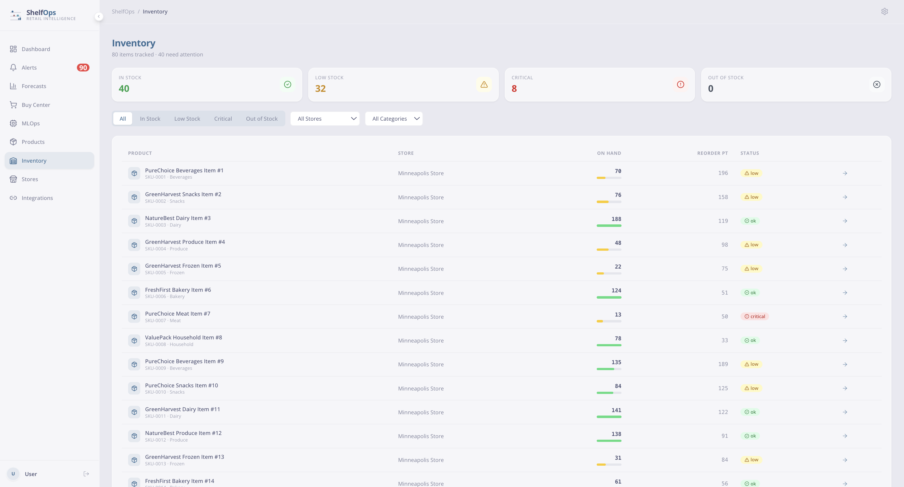
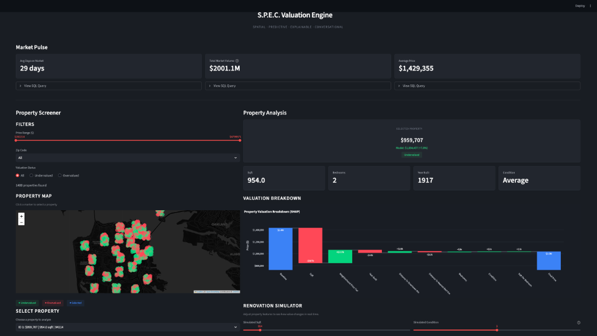
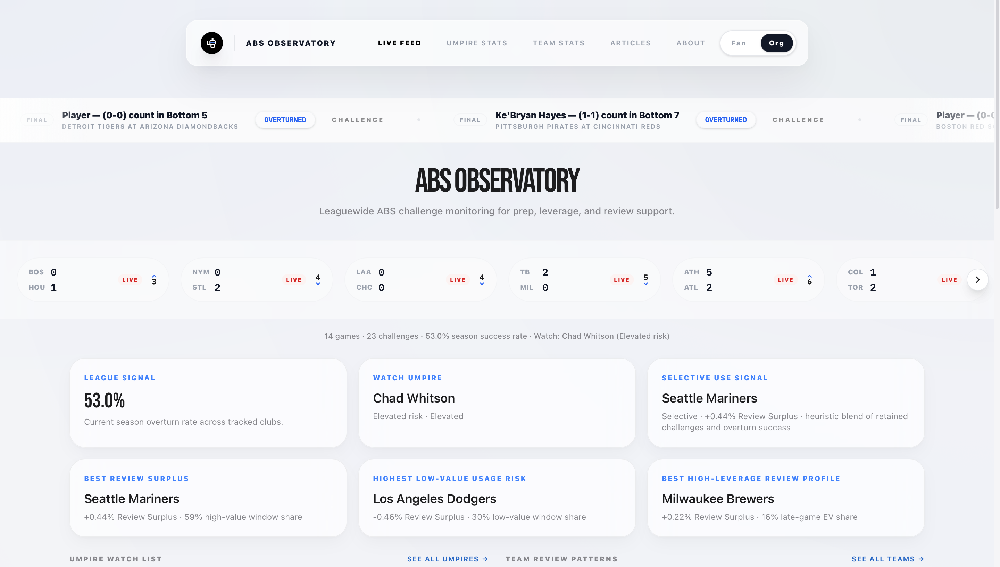
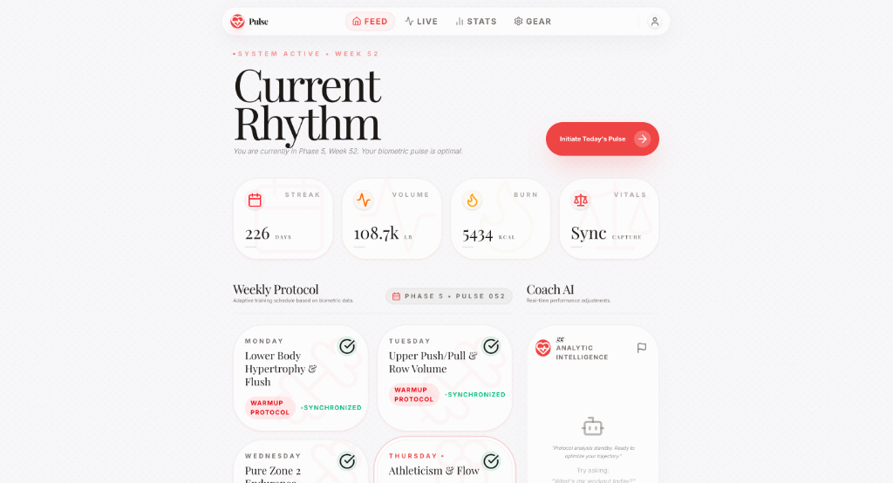
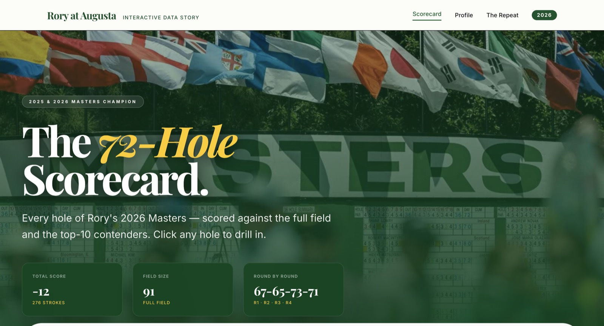
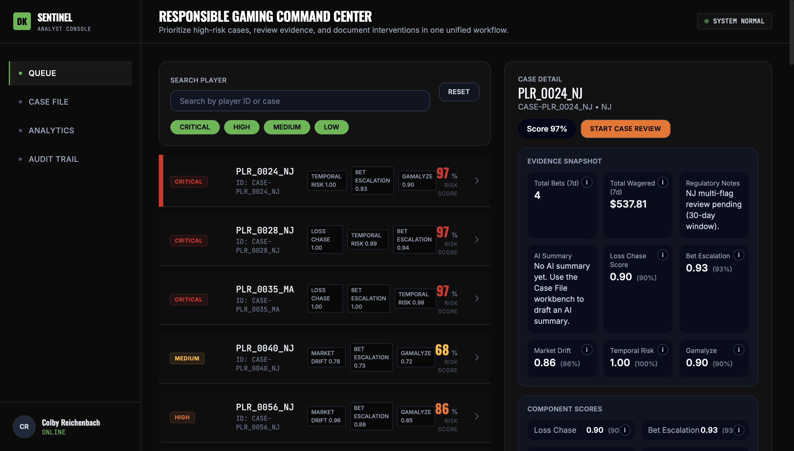

ShelfOpsInventory decision system
Applied Data Systems Engineer - UNC Chapel Hill - North Carolina
Carolina-built data products: pipelines, analytical views, model workflows, APIs, and user-facing tools that turn operational noise into reviewable product surfaces.
The site keeps the interactive canvas idea, but the visual language is mine: Carolina blue, warm cream, UNC references, and projects framed by the operational problem, workflow, product surface, and reliability checks around them.
Canvas mode supports dragging on desktop. Click any card for a deeper project readout.







Start with entities, workflows, constraints, and business decisions before picking tools.
Connect ingestion, storage, jobs, APIs, and interfaces so the system can be used end to end.
Surface scorecards, validation checks, logs, and reviewer context instead of hiding uncertainty.
I'm focused on applied data systems, product engineering, analytics engineering, and workflow automation roles.